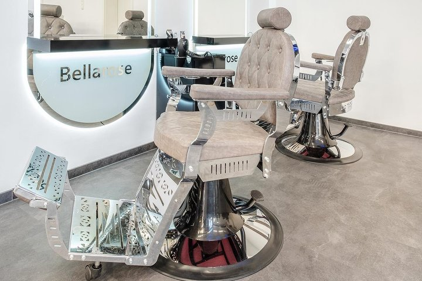
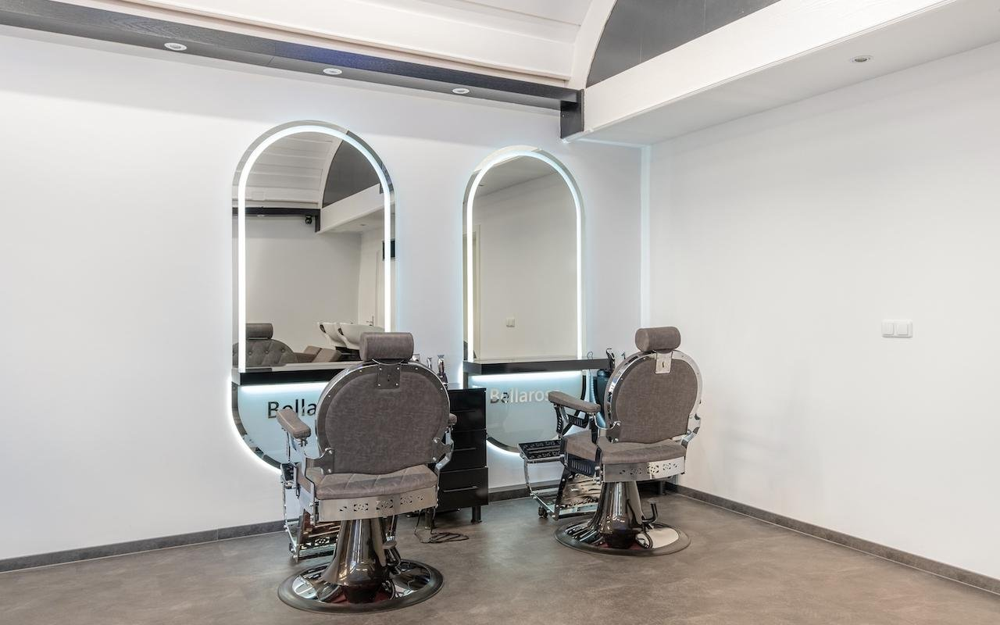
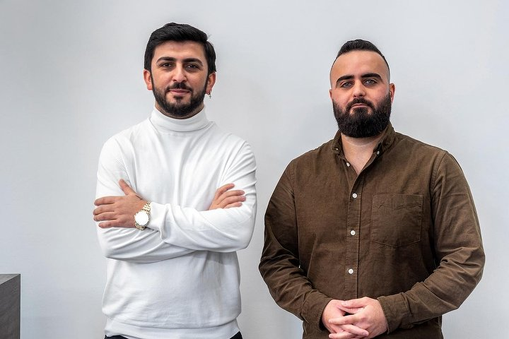
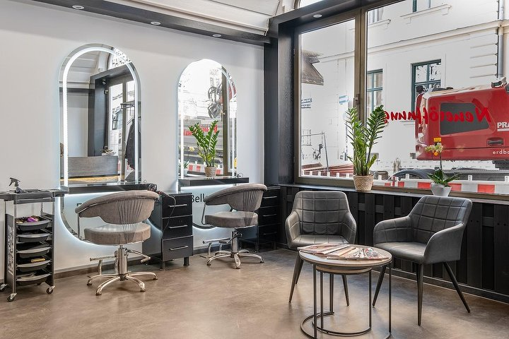
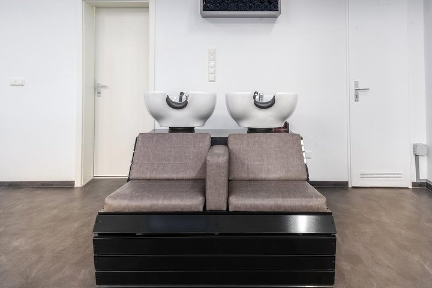
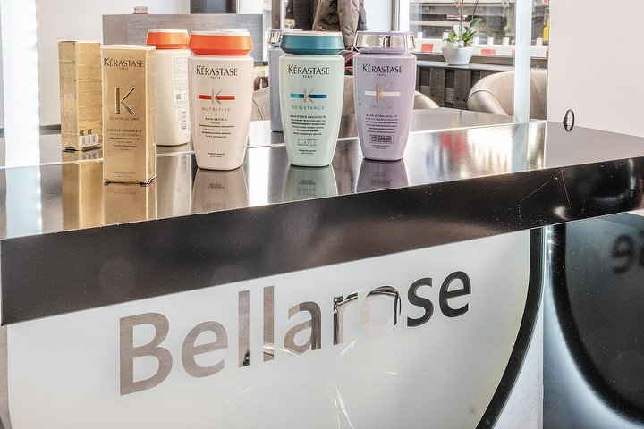
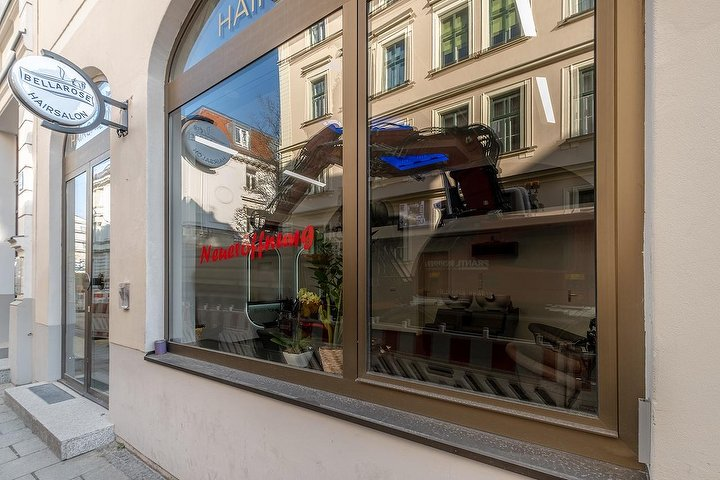

Farbe, die mitwächst.

Zwei Plätze. Kein Fließband.
Der Salon
Seit 2019 · InhabergeführtKlein genug, dass wir uns Zeit nehmen. Groß genug, dass wir alles können, was Farbe braucht.

Die meisten kommen mit einem Foto und der Sorge, dass daraus nichts wird. Wir gehen den Weg vorher durch: was dein Haar aktuell trägt, wie viele Termine es bis zum Ziel braucht und was das kostet. Erst danach mischen wir an.
Gearbeitet wird mit Olaplex bei jeder Aufhellung, weil Blond ohne Struktur nur zwei Wochen schön aussieht. Und mit Balayage als Standard für alle, die nicht alle sechs Wochen wiederkommen wollen — der Ansatz wächst weich heraus statt in einer Linie.
Dazu Augenbrauen in Fadentechnik, Kinderschnitte und Herren. Beraten wird auf Deutsch, Englisch und Türkisch.
Leistungen
Damen · Herren · KidsPreise
Stand Juli 2026Farbe und Schnitt kosten nach Haarlänge, weil längeres Haar mehr Produkt und mehr Zeit braucht. Wähl deine Länge — die Tabelle rechnet mit.
Kurz bis Kinnlänge




Was Kundinnen sagen
4,9 von 5 · 581 Bewertungen bei TreatwellBesuch uns
Termin nach VereinbarungKaulbachstraße 36
80539 München
089 37025244089 37025244
hallo@bellarosehairsalon.dehallo@bellarosehairsalon.de